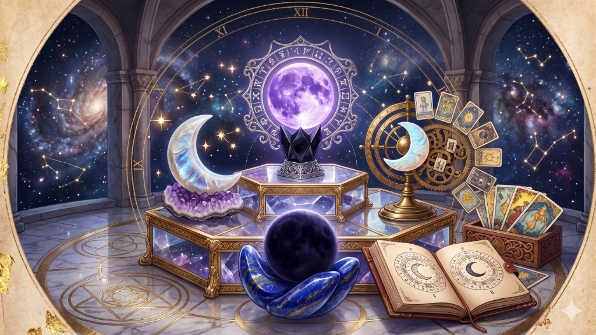
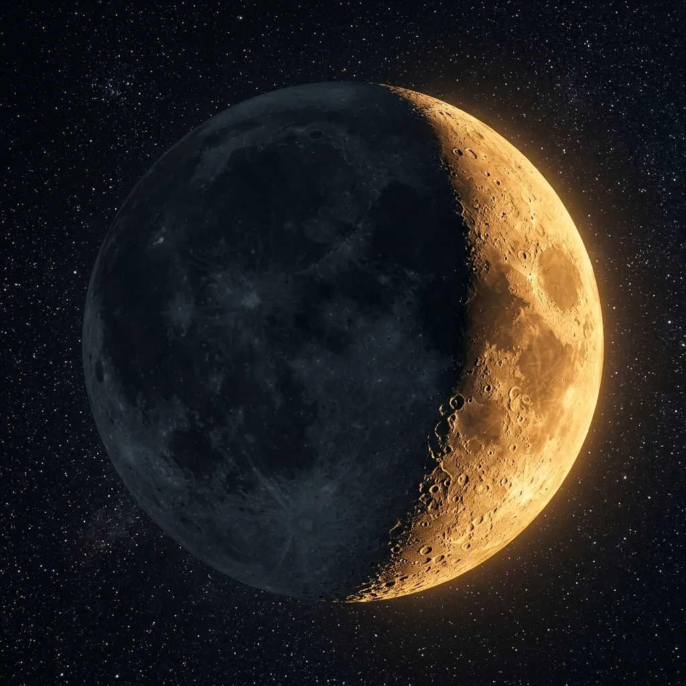
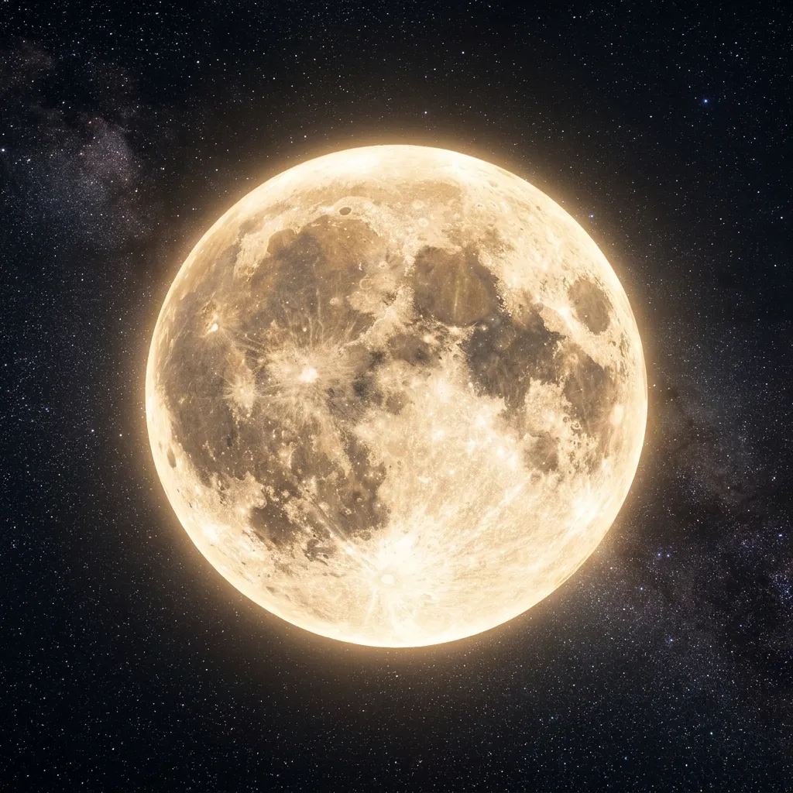

¿Te has fijado en cómo algunos días desbordas energía y optimismo, mientras que otros solo te apetece retirarte del mundo y sumergirte en tus pensamientos? No estás a solas en este vaivén emocional. Desde tiempos ancestrales, la humanidad ha sabido que la Luna no solo gobierna las mareas de nuestros océanos, sino también nuestras propias mareas internas: las emociones, la intuición y la energía vital.

Entender las fases de la luna y su significado místico te permite dejar de luchar contra tu propio ritmo y empezar a fluir con el universo. Cuando sincronizas tus proyectos, tus rituales y tus decisiones con el ciclo lunar, todo parece encajar con menor esfuerzo.
Sintonía Astral en Tiempo Real: Antes de empezar, recuerda que puedes comprobar el estado del cielo hoy mismo en nuestra página de inicio para ver la Fase Lunar de Hoy y descubrir qué vibración te acompaña en este preciso instante.
El ciclo lunar y sus 4 fases principales: Cómo canalizar su energía
Cada mes, la Luna completa un viaje de 29,5 días en el que nace, crece, brilla en todo su esplendor y vuelve a desvanecerse. Cada una de estas etapas tiene una carga energética única que puedes aprovechar a tu favor.
1. Luna Nueva: El Inicio y la Siembra de Intenciones
La Luna Nueva es el momento en que el satélite queda completamente a oscuras, oculto en el cielo nocturno. Místicamente, representa el vacío fértil: el lienzo en blanco antes de la creación.
- Cómo influye en tus emociones: Es común sentir una bajada de energía física, pero un aumento de la introspección. Es un periodo de calma, silencio interior y reflexión profunda. Si te sientes un poco más ermitaño de lo habitual, respétalo; tu alma te está pidiendo un respiro.
- Qué hacer en Luna Nueva: Es el momento perfecto para sembrar semillas. No es una fase para actuar con agresividad, sino para planificar, meditar sobre tus próximos objetivos y escribir tus intenciones para las próximas semanas.
Recomendación de Alquimia Digital: Para plasmar tus decretos y manifestar en cada inicio de ciclo, te recomendamos llevar un registro físico en un Diario de Manifestación Astral. Escribir tus metas a mano bajo esta Luna le da un anclaje mágico a tu subconsciente.

2. Cuarto Creciente: La Fuerza de la Acción y el Desarrollo
A medida que una fina línea de luz empieza a dibujarse en el cielo (pasando por la hermosa Luna Giba Creciente), la energía del cosmos se activa. La luz crece, y con ella, tus ganas de comerte el mundo.
- Cómo influye en tus emociones: Notarás un subidón de motivación, claridad mental y fuerza de voluntad. Es una etapa de optimismo, pero también pueden surgir los primeros desafíos o dudas sobre los planes que trazaste en la Luna Nueva.
- Qué hacer en esta fase: Es la hora de la acción. Trabaja duro en tus proyectos, haz esa llamada importante, inicia ese nuevo hábito o lánzate a por lo que quieres. Como siempre os recordamos en el panel de nuestra web, cuando la vibración es creciente, es el periodo idóneo para afilar tus herramientas, analizar detalles y confiar en que la claridad final llegará a su debido tiempo.

3. Luna Llena: La Culminación y la Explosión Mágica
Llegamos al clímax del ciclo. La Luna se muestra redonda, brillante y en su máxima expresión de luz. En el plano esotérico, la Luna Llena representa la cosecha, la iluminación de lo que estaba oculto y la expansión de la intuición.
- Cómo influye en tus emociones: Es la fase más intensa. Al estar la energía cósmica al 100%, las emociones se desbordan y se magnifican. Es habitual sufrir de insomnio, tener sueños extremadamente vívidos (casi proféticos) o sentir una sensibilidad a flor de piel. Las conexiones con el subconsciente están completamente abiertas.
- Qué hacer en Luna Llena: Es el momento de agradecer los frutos recogidos y de realizar rituales de luna llena enfocados en la atracción de abundancia o la recarga de amuletos. También es la noche perfecta para exponer tus barajas de tarot a la luz de la ventana para que se purifiquen con su magnetismo.

4. Cuarto Menguante: La Liberación y el Cierre de Ciclos
El viaje luminoso comienza a decrecer. La Luna va perdiendo su brillo paulatinamente, invitándonos a hacer lo mismo con todo aquello que nos pesa en la espalda. Místicamente, es la fase del desapego y la limpieza profunda.
- Cómo influye en tus emociones: Tras la tormenta emocional de la Luna Llena, llega una sensación de alivio y madurez. Es una fase ideal para la aceptación, la calma y el análisis objetivo de lo que ha funcionado y lo que no durante el mes.
- Qué hacer en esta fase: Es el momento de soltar. Ideal para terminar tareas pendientes, hacer limpieza a fondo en casa (tirar lo viejo), romper lazos con relaciones tóxicas, desintoxicar el cuerpo y, sobre todo, descansar. No inicies proyectos nuevos aquí; espera a que el ciclo se renueve.
Si sientes que hay bloqueos o patrones repetitivos que te cuesta romper en esta fase de cierre, puedes consultar nuestro apartado de Rituales de despojo y protección para ayudarte a canalizar esta energía de liberación de forma efectiva.
El impacto del ciclo lunar en el mundo de los sueños
Como habrás podido comprobar si eres un seguidor asiduo de nuestro espacio, la Luna y el plano astral dictan directamente la intensidad de nuestro descanso. Durante las fases crecientes y llenas, la actividad cerebral nocturna se dispara, abriendo portales a mensajes del subconsciente que a menudo se traducen en imágenes confusas o premoniciones mientras duermes.
Si te despiertas con la sensación de que tu mente ha estado intentando decirte algo importante a través de un sueño extraño, no lo dejes pasar; puedes buscar el significado en nuestro Diccionario de Sueños.
Conclusión: Aprende a surfear tus olas astrales
Vivimos en una sociedad que nos exige ser productivos, alegres y activos las 24 horas del día, los 7 días de la semana. Sin embargo, la naturaleza nos demuestra que todo en el universo tiene un proceso de expansión y otro de contracción. La Luna no brilla siempre con la misma intensidad, y tú tampoco tienes por qué hacerlo.
A partir de hoy, te invitamos a mirar al cielo (o a consultar el widget interactivo de nuestra web). Cuando aprendes a planificar tu vida respetando las fases de la luna, dejas de nadar a contracorriente y empiezas a surfear la energía del cosmos.